Виды фундаментов.

Существует большое количество видов фундаментов.
В зависимости от способа опирания на грунт различают следующие виды:
– ленточные;
– столбчатые (некоторые мастера называют их свайными);
– плитные.
Данные по расходу материалов на строительство различных видов фундаментов приведены в табл. 5.
Таблица 5. Расход материалов на строительство разных видов фундаментов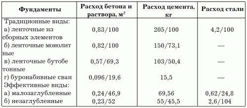
Ленточные фундаменты имеют одинаковую форму поперечного сечения по всему периметру стен здания, а также под всеми его внутренними несущими стенами. Чаще всего ленточные фундаменты устраивают под зданиями с тяжелыми массивными стенами, изготовленными из следующих материалов:
– природного камня-плитняка;
– обыкновенного кирпича;
– кирпича-сырца;
– бетонных блоков небольшого размера.
Возведение ленточных фундаментов характеризуется большими объемами земляных работ, высоким расходом материалов и значительной трудоемкостью. Однако, несмотря на все эти минусы, ленточные фундаменты все же получили широкое распространение в строительстве в основном благодаря простой технологии.
В зависимости от используемых при устройстве материалов ленточные фундаменты разделяют на:
– бутовые;
– бутобетонные;
– бетонные;
– кирпичные.
Бутовые фундаменты (рис. 22) выкладывают из крупного бутового камня одинаковой формы и размера. Для устройства фундаментов обычно выбирают плоскогранные камни (иногда их называют постелистыми). Поскольку в процессе работы их необходимо плотно укладывать друг на друга, скрепляя цементным раствором, некоторые камни приходится раскалывать. Толщина кладки из бутового камня варьируется от 50 до 70 см.
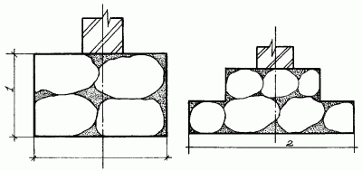
Рис. 22. Устройство ленточного фундамента из бутового камня: 1 – глубина заложения фундамента; 2 – ширина подошвы фундамента.
Бутовые фундаменты – самые массивные, а значит, самые трудоемкие из всех видов фундаментов. Именно поэтому не рекомендуется устраивать их при возведении садовых домиков и загородных домов. Однако, если бутовый камень является местным материалом и не нужно тратить средства на его транспортировку, можно использовать и его.
Положительные качества бутовых фундаментов:
– максимальная долговечность (срок службы составляет не менее 150 лет);
– прочность;
– устойчивость к промерзанию;
– устойчивость к воздействию грунтовых вод.
Бутобетонный фундамент выкладывают из раствора и наполнителя (щебня, гравия, бутовых камней небольшого размера). Также можно использовать битый или пережженный кирпич. В качестве связующего компонента применяют цементный или цементно-известковый раствор (в зависимости от влажности грунта).
Бутобетонную массу выкладывают в деревянной опалубке или же прямо в траншее с вертикальными стенами, постепенно заполняя весь ее объем. Для того чтобы грунт, осыпаясь, не смешивался с бетоном, вертикальные стенки траншеи закрывают полотнами рубероида или толя.
Технология приготовления бутобетонного фундамента достаточно проста: в подготовленную траншею насыпают наполнитель слоем 10–15 см, затем тщательно его утрамбовывают тяжелой трамбовкой и заливают раствором. После этого засыпают слоем песка и вновь заливают раствором. Уложенный таким образом фундамент по прочности практически не уступает бутовому, превосходя его в простоте исполнения (рис. 23).
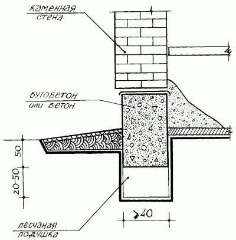
Рис. 23. Устройство бутобетонного фундамента.
Широкое распространение получили бетонные, или заливные фундаменты, состоящие из чистого бетона, с наполнителем из мелкого и среднего гравия или щебня. Бетонный фундамент заливают в опалубку и немного трамбуют. Благодаря однородности состава толщина бетонного фундамента меньше, чем у бутового или бутобетонного, примерно 20–35 см толщиной.
Бетонный фундамент имеет свои плюсы и минусы. Так, например, прочность и долговечность у этого вида фундамента не хуже, чем у двух предыдущих. Срок службы бетонных фундаментов, как и бутобетонных, составляет 50 лет. Недостаток всего один, но достаточно серьезный – большой расход цемента, а значит, высокая стоимость.
Кирпичный фундамент представляет собой кирпичную кладку из обыкновенного, обожженного кирпича на цементном или же на цементно-песчаном растворе. Толщина кирпичного фундамента зависит от размера используемого кирпича – 38, 51 и 64 см. Кирпичный фундамент в обычном строительстве используется крайне редко из-за дороговизны и недолговечности вследствие недостаточной водостойкости. Кирпичный фундамент, как правило, устраивают только на сухих грунтах и при наличии недорогого кирпича в достаточном количестве. Чаще всего в строительстве применяются бетонные и бутобетонные фундаменты (рис. 24).
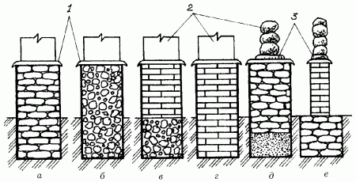
Рис. 24. Устройство фундаментов из различных материалов: а – бутовый; б – бутобетонный; в – кирпичный по бутобетону; г – кирпичный; д – бутовый на песчаной подушке; е – кирпичный по буту; 1 – гидроизоляционный слой; 2 – стены; 3 – подкладка.
Верхняя часть ленточного фундамента называется цоколем. По отношению к плоскости наружной стены цоколь бывает западающим, выступающим или сложенным заподлицо. Чаще всего выбирают западающий, поскольку в этом случае стенка фундамента имеет меньшую толщину и не требует устройства слива.
Столбчатые фундаментыКак правило, столбчатые фундаменты используют при строительстве домов со стенами из различных видов древесины. Давление на грунт у таких домов значительно меньше, а значит, можно сэкономить на материале для фундамента.
Столбчатые фундаменты устраивают следующим образом: выкапывают ямы-шурфы нужной глубины и сечения на расстоянии 120–200 см друг от друга в зависимости от конструкции и материала стен. Столбы фундаментов обязательно должны располагаться:
– под углами наружных стен;
– в местах примыкания внутренних стен;
– под пересечениями внутренних стен.
В том случае, если на лаги или балки пола опирается перегородка, под ними тоже устраивают фундамент. Внимательно следят за тем, чтобы ямы-шурфы были расположены соответственно разметке, под осями стен. Конечно, минимальные отклонения считаются допустимыми для такого рода работ, однако лучше, если их не будет совсем. Расстояние между столбами должно быть от 1,2 до 2,5 м.
В качестве материалов для строительства столбчатых фундаментов используются те же, что и при устройстве ленточных, однако расход их и, соответственно, затраты значительно ниже. Основной элемент таких фундаментов – это свая (или столб) из камня, кирпича, бетона или железобетона. В качестве формы для сваи можно использовать асбестовую трубу, заполненную цементным раствором.
При устройстве столбчатых фундаментов обращают внимание на необходимость устройства цоколя или забирки в промежутке между столбами. Делают ее разными способами. На рис. 25 показан вариант фундамента с теплым подпольем и кирпичным цоколем, который опирается на перемычку, уложенную поверх столбов. Верх столбов находится ниже отметки земли на 10–15 см. Железобетонную перемычку выполняют в деревянной опалубке в виде установленного от столба до столба желоба. На дно этого желоба укладывают 3-сантиметровый слой раствора и стальную арматуру из 3–4 прутьев сечением не менее 10 мм. Концы прутьев сгибают крючком. Арматуру закрывают сверху слоем раствора не менее 5 см. В этом варианте фундамента большое значение имеет воздушная прослойка между перемычкой и грунтом основания, предохраняющая цоколь от давления вспученного грунта, плотно прижатые с обеих сторон к перемычке асбестоцементные листы закрывают эту воздушную прослойку от осыпания грунта. Кстати, большинство проблем, с которыми сталкиваются через 1–2 года после строительства дома, связаны именно с незнанием этой особенности устройства цоколя (рис. 25).
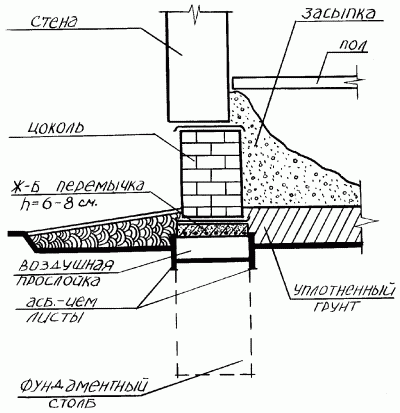
Рис. 25. Устройство фундамента с теплым подпольем и кирпичным цоколем.
Известен еще один вид фундамента – деревянный. Для его устройства используется русская лиственница – материал, у которого прочность на сжатие не уступает самым лучшим маркам бетона.
Достоверно известно, что в Венеции сохранились дворцы, построенные на фундаменте из лиственницы. Интересен тот факт, что многим строениям не менее 5 столетий. У этого замечательного материала только один недостаток – дороговизна, а значит, далеко не все смогут его себе позволить.
Желающие построить садовый домик на деревянном фундаменте, или, как еще принято говорить, на деревянных стульях, могут использовать вместо лиственницы сосновую или дубовую древесину, обмазанную битумом или обожженную, диаметром не менее 20 см.
Подготовленные деревянные стулья устанавливают на брусья шириной 20 см, длиной 50 см и толщиной около 10 см. Эти брусья требуются для повышения устойчивости фундамента. Стулья заглубляют в грунт не менее чем на 130 см.
Деревянные стулья устраивают по всему периметру строения на расстоянии полутора метров друг от друга, после чего ямы засыпают землей слоем 20–25 см и утрамбовывают. Срок службы такого фундамента составляет примерно 7–15 лет (в зависимости от выбранного материала, при этом дуб наиболее предпочтительнее). Покрытие материала антисептическими веществами или же его обжиг примерно вдвое увеличивают этот срок.
Плитные фундаментыФундаменты такого вида в основном устраивают на тяжелых пучинистых и просадочных грунтах. Они имеют жесткую конструкцию в виде одной плиты, выполненной под всей плоскостью здания. Плитные фундаменты прекрасно выравнивают все вертикальные и горизонтальные смещения грунта, благодаря чему они получили еще одно название – «плавающие».
Устройство плитных фундаментов в основном применяется при строительстве малоэтажных зданий простой формы. Из-за использования большого количества бетона и расхода металла на арматуру плитные фундаменты достаточно дороги.
Главный вопрос, который приходится решать при строительстве дома, – на какую глубину нужно закладывать фундамент? При этом неопытные строители впадают в крайности: – или выкапывают под фундамент слишком глубокую траншею, что влечет за собой перерасход средств, или, напротив, устраивают фундамент на недостаточной глубине, и в результате в фундаменте и в стенах дома появляются трещины.
В последнее время в книжных магазинах появилось множество книг зарубежных авторов, которые считают, что глубина фундамента для строительства дома должна быть от 50 до 100 см. Однако следует учитывать, что в большинстве западноевропейских стран отрицательные температуры в пределах 10–15° наблюдаются раз в сто лет. Значит, в условиях такого мягкого климата глубокого промерзания грунта почти не бывает, и проблема зимнего вспучивания жителям этих стран незнакома. Тем не менее советы и рекомендации этих авторов вполне подойдут жителям южных регионов нашей страны.
Свайные фундаментыФундаменты такого типа принято устраивать в местностях, где верхний слой грунта не сможет выдержать большую тяжесть. Есть, конечно, альтернатива – удалить верхние слои грунта до более плотных слоев, однако сделать это не всегда возможно, поскольку плотные слои грунта расположены довольно глубоко. Свайные фундаменты также устраивают при высоком уровне стояния грунтовых вод и на плывунах.
Свайные фундаменты представляют собой сваи, столбы с заостренным нижним концом, которые забивают или вворачивают в землю. Самыми устойчивыми являются винтовые сваи, которые вкручивают в землю с помощью специального малогабаритного оборудования. Эта технология очень удобна с точки зрения сохранения ландшафта вокруг строительного участка. Столбы, свободно проходя через слабые слои грунта, упираются в более твердые и передают им нагрузку от строения. Для создания жесткой конструкции верхняя часть столбов соединяется балками.
Для удобства сваи можно не вворачивать, а изготовить непосредственно в грунте. В этом случае бурят скважину, в нее вставляют арматурный каркас или полые трубы, после чего скважину заливают бетоном. Затем бетон обязательно уплотняют трамбовкой или вибрацией.
Примерный срок службы монолитных свайных фундаментов составляет не менее 150 лет. Однако для этого при их возведении следует соблюдать определенные технологические нормы.
Плавающие фундаментыВ условиях заболоченных, сильно пучинистых и зыбких грунтов устройство обычных фундаментов представляется очень проблематичным, потому что влечет за собой значительные технические трудности, гораздо больший объем земляных работ и, как следствие, высокие затраты.
В этом случае можно устроить так называемый плавающий фундамент, представляющий собой железобетонную монолитную плиту, свободно лежащую на насыпном основании. Размеры плиты должны соответствовать размерам дома. По периметру плиты с нижней стороны делают ребра жесткости. Точно такие же ребра, только меньшей высоты, устраивают по всей плоскости плиты в продольном и поперечном направлениях с шагом 100–120 см (рис. 26).
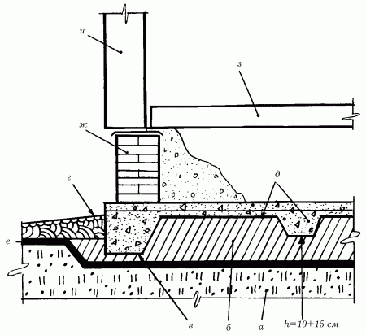
Рис. 26. Устройство плавающего фундамента: а – пучинистый грунт основания; б – уплотненный насыпной грунт; в – ребро; г – отмостка; д – арматура; е – монолитная железобетонная плита; ж – цоколь; з – конструкция пола; и – стена.
Технология устройства такого вида фундамента довольно проста. Прежде всего из грунта, щебня, крупного песка или их смеси насыпают основание толщиной 40 см, немного увлажняют и тщательно утрамбовывают. Из строганых досок собирают щитовую опалубку и закрепляют ее с наружной стороны вбитыми в землю колышками с шагом 1–1,5 м. Затем для бетонирования ребер жесткости выкапывают канавки и застилают их полосками толя, рубероида или пергамина в качестве гидроизоляционного слоя.
Арматуру равномерно раскладывают по всему основанию и вдоль канавок. Для арматуры подойдут стальные прутья или проволока любого размера, обрезки труб и профиля. На небольшую ржавчину внимание не обращают, так как на качество железобетона она не повлияет.
После установки арматуры заливают бетон и трамбуют верхнюю плоскость плиты, выравнивая ее по уровню. В случае необходимости в нужных местах добавляют бетон.
Поверхность плиты закрывают листовым материалом от дождя и солнца и оставляют в таком виде на 10–15 дней, после чего снимают опалубку и выкладывают кирпичный цоколь по всему периметру плиты. Под внутренними стенами и лагами пола выкладывают кирпичные столбы, располагая их над ребрами жесткости.
В зависимости от заглубленности различают следующие типы фундаментов:
– сильнозаглубленные;
– малозаглубленные;
– незаглубленные.
На территории средней полосы России принято устройство сильнозаглубленных фундаментов, мало– и незаглубленные применяют только в южных регионах.
Сильнозаглубленные фундаментыСильнозаглубленные фундаменты целесообразнее применять в северных района, а также на территории средней полосы России.
Сильнозаглубленный ленточный фундамент представляет собой конструкцию из бетонных блоков размером 300 х 300 х 450 мм. Блоки укладывают на цеметном растворе в три ряда по высоте с армированием межрядных плоскостей армировочной сеткой. Фундамент возводят на песчаной подушке толщиной 15–20 см. Общее заглубление фундамента (с учетом песчаной подушки) составляет 90 см. Высота фундамента от земли составляет 40–45 см.
Малозаглубленные фундаментыУстройство малозаглубленных фундаментов позволяет значительно снизить объем земляных работ и расходы на материалы за счет уменьшения глубины закладки фундамента. При действии сил морозного пучения по касательной боковые грани фундаментов необходимо выполнять наклонными с расширением книзу, а пазухи траншей заполнять песчаной подушкой с послойным уплотнением. Также дополнительно рекомендуется сделать обмазку выровненных боковых поверхностей различными противопучинистыми материалами.
Малозаглубленный ленточный фундамент представляет собой бетонную конструкцию шириной 30–50 см, высотой 20–50 см, уложенную с небольшим заглублением на песчаную подушку (рис. 27).
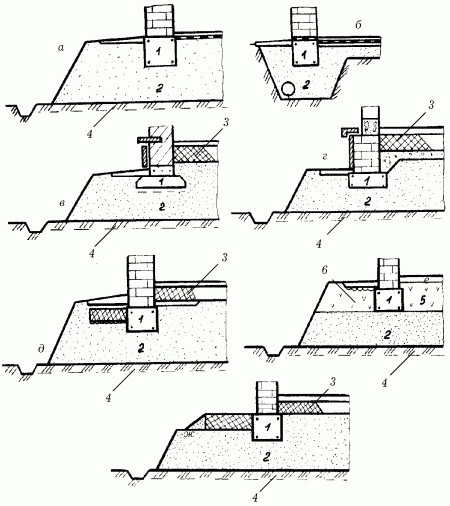
Рис. 27. Устройство малозаглубленного фундамента: а – на подсыпке; б – на подсыпке в траншее; в – жилых строений; г – деревянных домов; д, е, ж – на подсыпке с утеплением; 1 – фундамент; 2 – подсыпка из непучинистого материала; 3 – утепление; 4 – водоотводные канавки поперек подсыпки через каждые 2–3 м; 5 – уплотненный торф; 6 – теплоизоляция.
В зависимости от строения и степени пучинистости грунта блоки для фундаментов располагают следующим образом:
– свободно, без соединения между собой;
– в виде монолитного железобетона;
– соединенными между собой.
Деформации оснований фундаментов не должны превышать норм, допустимых для малозаглубленных фундаментов (табл. 6).
Таблица 6. Предельные деформации малоэтажных строений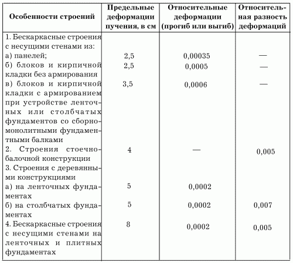
При устройстве фундаментов в средне-и сильнопучинистых грунтах основания скрепляют между собой балками или различными поясами усиления (например, железобетонными). В этих условиях также устраивают фундаменты из трапециевидных блоков, размещенных в траншее на засыпке из непучинистых материалов.
Суть устройства фундамента такого типа заключаются в следующем: при проявлении нормальных сил морозного пучения происходит выпирание непучинистого материала через треугольные вырезы блоков, в результате чего действие и величина этих сил становятся значительно слабее.
Устройство малозаглубленного фундамента в зоне сезонного промерзания грунтовДля усиления фундамента в зоне сезонного промерзания грунтов, а также для повышения устойчивости против воздействия сил пучения фундамент устраивают в виде открытой оболочки с опорной подушкой в верхней части. При этом сама полость оболочки может быть заполнена грунтом-дренажем (рис. 28).
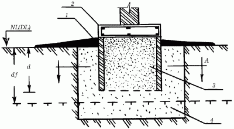
Рис. 28. Устройство малозаглубленного фундамента в виде открытой оболочки: 1 – оболочка; 2 – опорная подушка; 3 – грунт-дренаж; 4 – песчаная подушка.
Песчаную (или щебеночную) подушку укладывают под оболочкой цилиндрической, квадратной, прямоугольной и любой другой формы. Дополнительно поверхность оболочки промазывают горячим битумом или смолой.
Если деформация фундамента в сезонные периоды промерзания и оттаивания превышает допустимые пределы, рекомендуется использование специальной теплозащиты (рис. 29).
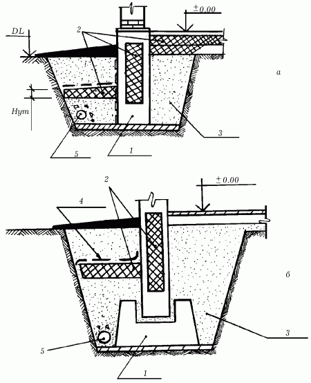
Рис. 29. Устройство теплоизоляции в малозаглубленных фундаментах: а – ленточный фундамент; б – столбчатый фундамент; 1 – цемент; 2 – теплоизоляция; 3 – песчаная подушка; 4 – гидроизоляция; 5 – дренаж.
Расположенная на небольшой глубине рядом с фундаментной стеной теплоизоляция замедляет отдачу тепла и значительно уменьшает глубину промерзания грунта.
В качестве теплоизоляционного слоя применяют минераловатные плиты или пенопласт, а также легкие сыпучие материалы (рис. 30). При использовании подобных материалов большое значение имеют следующие их свойства:
– теплоизолирующая способность;
– прочность;
– долговечность.
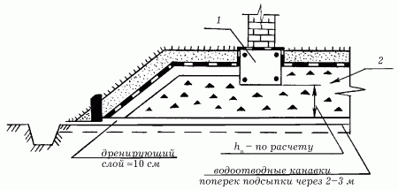
Рис. 30. Устройство малозаглубленного фундамента на теплоизоляционной подушке: 1 – малозаглубленный фундамент; 2 – теплоизоляционная подушка.
Положительную температуру грунта поддерживают также с помощью электрического кабеля, проложенного вокруг фундамента.
Незаглубленные фундаментыНезаглубленные фундаменты устраивают при отсутствии сил морозного пучения. Основные мероприятия по обеспечению устойчивости строений в таком случае сводятся к подготовке основания с последующим устройством фундаментов.
Выше отмечалось, что при использовании песчаных подушек под фундаментами силы морозного пучения значительно уменьшаются. Происходит это за счет упругости непучинистых материалов. В качестве материалов для подушек рекомендуется использовать крупно– и среднезернистый песок, мелкий щебень, керамзит, котельный шлак и пр. Ленточные фундаменты под кирпичные и блочные строения, возводимые на среднепучинистых и сильнопучинистых грунтах, соединяют в горизонтальную раму, которая выравнивает деформацию основания от пучения в период промерзания грунта, а также во время весеннего отттаивания. Этот же принцип применяют и при устройстве столбчатых фундаментов.
Заглубление песчаной подушки, ее высота, а также армирование фундаментов определяют так же, как и при устройстве малозаглубленных фундаментов на пучинистых грунтах.
Незаглубленный ленточный фундамент представляет собой элемент высотой примерно 20–25 см и толщиной 30–50 см. Толщина песчаной подушки зависит от степени пучинистости грунта.
Для строительства деревянных строений на слабопучинистых грунтах можно применять ленточные фундаменты из блоков, уложенных на подсыпку из песка или мелкого гравия. При средне-и сильнопучинистых грунтах эти блоки должны быть жестко соединены между собой сваркой или скруткой (рис. 31).
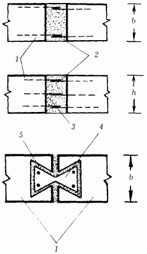
Рис. 31. Устройство ленточного фундамента на средне-и сильно-пучинистых грунтах: 1 – блоки; 2 – арматура; 3 – бетон; 4 – железо-бетонная шпонка; 5 – раствор.
Правильное применение пучинистого грунта в качестве природного основания под незаглубленные фундаменты, в том числе и с использованием теплоизоляции, исключает деформацию фундамента сверх нормы и позволяет избежать лишних расходов на строительство.
Особенности устройства фундаментов в зависимости от характеристики грунтаПеред началом строительства требуется узнать основные характеристики грунта той местности, где предполагается возведение дома. Такую проверку можно провести самостоятельно: для этого выкапывают яму глубиной до 2 м и определяют уровень расположения грунтовых вод и глубину промерзания грунта.
Если уровень грунтовых вод расположен достаточно глубоко (ниже глубины промерзания на 1,5–2 м), такой грунт считается сухим. В этом случае устраивают песчаный фундамент (рис. 32).
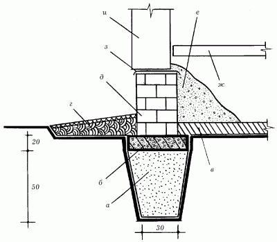
Рис. 32. Устройство песчаного фундамента: а – крупнозернистый песок; б – бетон; в – уплотненный грунт; г – отмостка; д – цоколь; е – засыпка; ж – пол; з – гидроизоляция; и – стена.
В сухих грунтах подошву фундамента следует устраивать на глубине 70–80 см. Прежде всего дно траншеи послойно заполняют крупным песком. Каждый слой увлажняют водой. В этом случае можно сэкономить примерно 50 % бетона. Далее над поверхностью земли бетон укладывают в опалубку, а верх фундамента выводят на отметку 50–60 см от уровня земли, выравнивают его цементно-песчаным раствором и устраивают гидроизоляцию из двух слоев толя или рубероида.
При расположении уровня грунтовых вод ниже глубины промерзания меньше чем на 1,5 м фундамент закладывают на глубину 70–100 см в песчаных и супесчаных грунтах и на расчетную глубину промерзания в суглинистых грунтах.
Хуже всего, когда уровень грунтовых вод совпадает с глубиной промерзания грунта. В этом случае работы по устройству фундаментов более сложны: основание фундамента закладывают ниже расчетной глубины промерзания на 30 см (рис. 33). Для экономии материала часть бетона можно заменить песчаной подушкой.
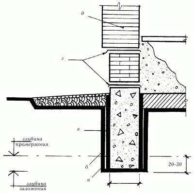
Рис. 33. Устройство фундаментов при совпадении уровня грунтовых вод с глубиной промерзания: а – глубина заложения; б – глубина промерзания; в – обмазка; г – гидроизоляция; д – кирпич.
Чаще всего фундаменты на песчаной подушке применяются в следующих случаях:
– для экономии строительных материалов;
– для полной или частичной замены непригодных грунтов в основании;
– для подъема отметки пола над уровнем грунтовых вод.
При их устройстве в ямы засыпают средне-или крупнозернистый песок слоем 150–200 мм, поливая водой и затем тщательно утрамбовывая. В условиях обводненных грунтов, особенно опасных при промерзании в зимнее время года, предварительно следует устроить дренаж. В противном случае возможно заиливание песчаных подушек, а значит, и утрата ими первоначальных свойств.
После снятия опалубки стенки фундамента промазывают горячим битумом для того, чтобы уменьшить сцепление стен фундамента с грунтом при пучении в зимний период. На рис. 33 показаны два слоя гидроизоляции: это необходимо в том случае, если стены дома сложены из недостаточно водостойких материалов – например, опилкобетона, арболита или кирпича-сырца. В условиях тяжелых грунтов подошву фундамента делают толще верха на 30 см так, как это показано на рис. 34.
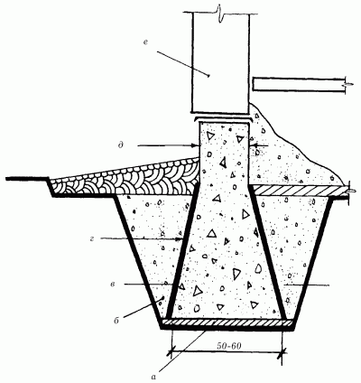
Рис. 34. Устройство бетонного или бутобетонного фундамента в условиях тяжелых грунтов: а – уплотненный грунт или щебень; б – обратная засыпка; в – глубина промерзания грунта; г – обмазка; д – бетон или бутобетон; е – каменная стена.
Установлено, что процессы накопления влаги в связных грунтах происходят вследствие нарушения их природного состава в процессе работы. Следовательно, чем больше будет их объем после выполнения целого ряда работ по устройству фундаментов (оборудования подвалов и всевозможных коммуникаций, прокладки труб и устройства насыпей при вертикальной планировке), тем больше здесь появится влаги в последующий период. Следовательно, силы морозного пучения тоже возрастут.
Как с этим бороться? Наблюдениями доказано, что устройство фундаментов без нарушения целостности грунта в вытрамбованных котлованах значительно снижает риск появления сил морозного пучения. В этом случае под подошвой фундаментов и вокруг их боковых граней создается уплотненный грунт пониженной влажности.
Нагрузка фундамента по подошве и боковым стенкам передается на уплотненный грунт, а затем и на грунты природного сложения, вследствие чего достигается повышенная несущая способность фундамента, а размеры его значительно снижаются и уменьшается воздействие сил морозного пучения.
К такому виду устройства фундаментов относятся в основном элементы свайных фундаментов:
– забивные призматические и пирамидальные сваи;
– забивные блоки;
– набивные сваи с пробитых скважинах;
– виброштампованные сваи.
Суть устройства фундаментов в вытрамбованных грунтах состоит в следующем. Котлованы под отдельные виды фундаментов, перечисленных выше, не выкапываются, а вытрамбовываются на необходимую глубину с последующим заполнением бетоном в распор или установкой сборного элемента.
По способу устройства фундаменты в вытрамбованных основаниях бывают:
– обычными, с плоской или клиновидной подошвой;
– с расширенным основанием.
Последний тип фундамента получают втрамбовыванием в дно траншеи отдельными порциями щебня, гравия, крупного песка, бетонной смеси или строительных отходов с последующим заполнением верхней части вытрамбованного котлована монолитным бетоном класса В15 (рис. 35).
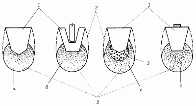
Рис. 35. Устройство фундаментов в вытрамбованных котлованах: а – способом заполнения бетоном в распор (обычный фундамент); б – установкой сборного элемента (обычный фундамент); в – заполнением монолитным бетоном (фундамент с расширенным основанием); г – фундамент с расширенным основанием; 1 – фундамент в вытрамбованном грунте; 2 – уплотненный грунт; 3 – втрамбованный жесткий материал.
По характеру взаимодействия с грунтом фундаменты в вытрамбованных котлованах бывают:
– столбчатыми, отдельно стоящими;
– ленточными прерывистыми.
При устройстве фундаментов в вытрамбованных траншеях в основании вокруг них образуется зона уплотненного грунта, способствующего уменьшению влажности и пучинистости.
Гарантией долгой службы любого вида фундамента служит его защита от поверхностных вод и дождя. Для этого от стен дома устраивают отмостку с небольшим уклоном, шириной не менее 100 см.
В доме с утепленным полом или полом с подогревом вместо цоколя устраивают забирку (рис. 36).
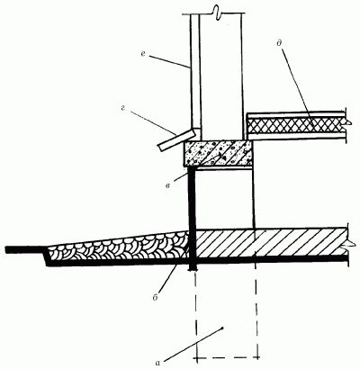
Рис. 36. Устройство столбчатого фундамента в доме с теплым полом: а – фундаментный пол; б – забирка; в – железобетонная перемычка; г – сливная отмостка; д – теплый пол; е – стена.
На приведенном выше рисунке фундаментный столб выведен выше планировочной отметки земли на 45–60 см. Сверху столба устраивают железобетонную перемычку, а с ее наружной стороны прикрепляют асбестоцементный лист, который для повышения водостойкости промазывают горячей олифой, после чего красят эмалью или масляной краской. Забирка готова.
Вариант такого рода фундамента более экономичен по сравнению с другими. Кроме того, он идеально подходит для постройки дачного домика.
Для строительства легких каркасных и панельных домов устраивают столбчатые фундаменты из асбестоцементных труб – достаточно долговечного и внешне привлекательного материала (рис. 37). Трубы хорошо противостоят пучению грунта и экономят расход бетона.
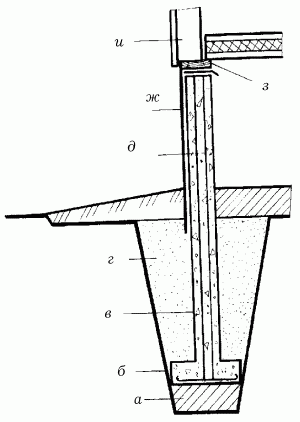
Рис. 37. Устройство столбчатых фундаментов из асбестоцементных труб: а – уплотненный грунт; б – железобетонный анкер; в – асбестоцементная труба; г – обратная засыпка; д – арматура; ж – забирка из асбестоцементного листа; з – доска-подкладка; и – деревянная стена.
Для того рода фундамента понадобятся асбестоцементные трубы длиной 120–150 см. Технология устройства фундамента довольно проста: на дно ямы укладывают железобетонную подушку: она служит опорой и в то же время анкером для асбестоцементной трубы, заполненной бетоном с арматурой и связанной проволокой с арматурой анкера. Связанный предварительно арматурный каркас опускают в яму перед бетонированием. В непучинистых грунтах армирование не делают.
Особенности возведения фундаментов для различных видов строений Фундамент под гаражДля строительства гаража, как и любого другого строения, требуется предварительно заложить фундамент. Так как гараж чаще всего строят из кирпичей, фундамент лучше всего сделать ленточным, то есть непрерывным.
Для гаража будет достаточно заложить фундамент на глубину 30 см шириной 40 см. Он должен быть немного шире, чем стена. Под фундамент роют траншеи, на дно которых насыпают слой песка толщиной не менее 50 см. Таким образом, глубина траншеи должна составлять 80 см.
На дно траншеи засыпают песок двумя слоями по 25 см, каждый из которых утрамбовывают и поливают водой, чтобы песок спрессовывался. На приготовленную песчаную подушку укладывают параллельно друг другу несколько прутьев арматуры. Их следует уложить так, чтобы концы перекрывали друг друга не менее чем на 20 см, затем скрепить их между собой с помощью проволоки. Для предотвращения коррозии арматуры прутья следует расположить на расстоянии 5 см от слоя песка, поэтому их перед заливкой бетоном подвешивают на нужной высоте, положив по краям траншеи перекладины.
Залив траншеи бетоном, в фундамент вставляют металлические прутья длиной около 40 см, погружая их наполовину длины. В дальнейшем они понадобятся для связки фундамента со стенами гаража. Прутья устанавливают по углам строения и между ними на расстоянии 1–1,5 м друг от друга.
В жаркую погоду поверхность застывающего бетона накрывают рубероидом или присыпают опилками, мхом или травой и смачивают водой, чтобы он высыхал постепенно и не трескался. Как правило, гаражи строят без цоколя.
Перед закладкой фундамента следует убедиться, что площадка ровная. Если же она имеет уклон, необходимо провести планировку, то есть снять лишнюю землю с возвышений.
Фундамент необходимо защитить от воздействия воды с помощью средств гидроизоляции. Вокруг строения делают отмостку – небольшой бетонированный уклон от стены по всему периметру сооружения, который не позволит талой и дождевой воде скапливаться у стен гаража.
Фундамент под печьВ наши дни печи хоть и редко, но встречаются. Однако поставить печь – это еще полдела. Главное – уметь правильно сложить фундамент. Одна из главных причин преждевременного выхода печи из строя – ненадежный фундамент.
В одноэтажных домах печи ставят на специальных фундаментах. Исключение составляют небольшие печи или камины, общей массой до 750 кг: их можно устанавливать непосредственно на пол. Однако это правило действует только для устойчивых полов. Если прочность пола вызывает сомнения, его можно дополнительно усилить балками. Под более тяжелые печи фундаменты устраивают на плотных, не дающих осадки под нагрузкой грунтах.
Поскольку верхний растительный слой грунта содержит много органических примесей и не может служить основанием под фундаменты, его необходимо удалить. Толщина этого слоя может варьироваться от 10 до 50 см.
Фундамент под банюВ старину русскую бревенчатую баню ставили на камни, уложенные прямо на землю. Под внутренними и наружными углами бани устраивали опоры из наиболее крупных камней, а промежутки между ними заполняли любым материалом – мелким щебнем, небольшими камнями и жидкой глиной. Эта мера была необходима для защиты пола от продувания. Для увеличения срока службы бани нижний ее венец делали из дуба.
В этом случае баня могла стоять прямо на земле.
Подобный способ постановки небольшой бани довольно прост и идеально подходит для строительства на однородном плотном или каменистом грунте. Помимо этого, требуется, чтобы грунт в зимнее время равномерно промерзал и так же равномерно оттаивал, а сама конструкция бани была надежной.
Чтобы баня служила дольше, ее устраивают на фундаменте. Строительные работы начинают с устройства участка, на котором будет находиться баня. Участок освобождают от растительности, снимают верхний слой и выравнивают. Затем согласно намеченному плану разбивают участок под фундамент. По углам участка на расстоянии 1,5 м от внешнего контура бани устанавливают П-образные колышки с прибитыми к ним сверху брусками. Затем натягивают на них шнуры, обозначающие контур фундамента. Еще раз тщательно проверяют расстояние между углами по диагонали; сами углы должны быть прямыми.
Противоположные стены бани строят с отклонением от параллельного положения примерно на 4°, для чего одну стену отклоняют от параллельного положения в одну сторону на 2°, а другую – в другую сторону также на 2° (рис. 38).
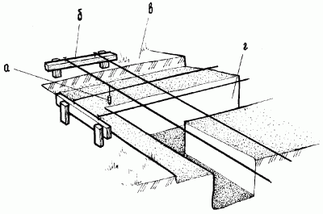
Рис. 38. Установка обноски: а – отвес; б – П-образная стойка; в – верхний растительный слой; г – траншея под фундамент.
Очень просто устроить фундамент на однородном, сухом и плотном грунте. В этом случае укладывают крупные постелистые камни, сверху укладывают обработанные антисептиком и промазанные битумом брусья бани. Камни укладывают под всеми углами бани, а также в местах стыка внутренних стен с наружными.
Довольно часто бани возводят на ленточном фундаменте из камня, поверх которого укладывают слой гидроизоляции. Промежутки между камнями, грунтом и нижним венцом заполняют разведенной глиной; ею же заполняют траншею снаружи. В результате получается превосходная отмостка, предохраняющая баню от атмосферных осадков (рис. 39).
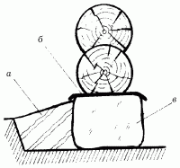
Рис. 39. Опоры-подкладки из природного камня: а – утрамбованная глина; б – камни; в – гидроизоляционный слой.
В проблемных грунтах обычно строят настоящие фундаменты, только более упрощенного типа.
О проблеме промерзания грунта говорилось выше. Однако строительство фундамента для бани значительно отличается от строительства обычного дома: топиться баня будет нерегулярно, а значит, и строить ее нужно как неотапливаемое строение.
Баня – легкое строение, поэтому даже при глубоком заложении фундамента последний будет выталкиваться, если к нему будет примерзать грунт. Для того чтобы этого не произошло, фундамент дополнительно защищают противопучинистыми щитами или оболочкой. Это не что иное, как та самая песчаная подушка, о которой шла речь выше. Однако существует и более надежное средство – двуслойная полиэтиленовая пленка с нанесенной между слоями специальной смазкой БЛМ-3 (рис. 40).
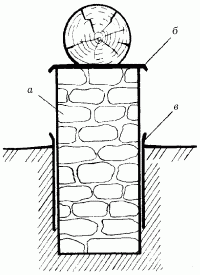
Рис. 40. Защита фундамента противопучинной оболочкой: а – бутовый камень на растворе; б – гидроизоляция; в – противопучинная оболочка.
Вместо смазки БЛМ-3 часто используют горячий садовый вар в смеси с отработанными машинным маслом или солидолом.
Для устройства фундамента бани можно также применять и деревянные стулья, покрытые расплавленным битумом.
Деревянный стул представляет собой комлевую часть дерева диаметром 30–40 см, поставленную на чурбак или деревянную крестовину. В вертикальном положении на опорах (для них можно использовать камень, кирпич, доски) столб фиксируется крепкими косынками (рис. 41).
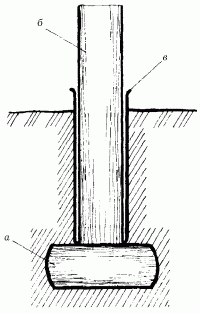
Рис. 41. Устройство деревянных стульев на опорах из различных материалов: а – камень; б – комлевая часть бревна; в – гидроизоляция.
Перед покрытием горячим битумом деревянные столбы и стулья покрывают антисептиком и просушивают.
При устройстве фундаментов из кирпича, бутового камня или бетона особое внимание уделяют характеру применяемого раствора – как правило, он должен соответствовать характеру грунта. В условиях залегания грунтовых вод ниже 3 м используют раствор из цемента марки 100, известкового теста (иногда его заменяют глиной) и песка, взятыми в соотношении частей 1: 0,5: 5. Если уровень грунтовых вод находится на глубине от 1 до 3 м, соотношение частей для раствора должно быть другим: 1: 0,3: 3,5. Если уровень грунтовых вод расположен на глубине менее 1 м, для приготовления раствора берут цемент марки 150 и песок в соотношении частей 1: 2,5 без примеси глины или известкового теста.
Для бани обычно строят простейший ленточный фундамент. Прежде всего в подготовленную траншею насыпают крупнозернистый песок, щебень или гравий слоями по 20 см, каждый слой плотно утрамбовывают, одновременно поливая водой, после чего на уровне земли заливают все слои жидким цементным раствором и выкладывают цоколь из кирпича или бутового камня. Сверху на фундамент укладывают два слоя толя или рубероида (рис. 42).
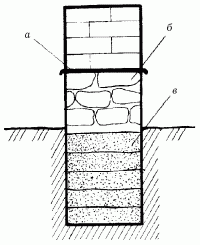
Рис. 42. Устройство ленточного фундамента баню: а – слой рубероида; б – цоколь из бута на растворе; в – утрамбованный песок или щебень.
При устройстве столбчатого фундамента по углам бани и в местах сочленений внутренних стен с наружными устанавливают столбы из бетона, кирпича или бутового камня. Для экономии материала на половине глубины траншеи делают песчаную подушку.
Бетон для фундамента изготавливают непосредственно на месте строительства. Для этого лучше всего использовать армированный бетон, который укладывают в дощатую опалубку, тщательно уплотняют и оставляют до полного схватывания раствора.
В качестве опалубки применяют также и другие материалы, например, трубы из кровельного железа или асбестоцементные трубы. В этом случае способ устройства фундамента довольно прост. Прежде всего выкапывают яму нужной глубины с поперечным сечением не менее 30 см, вставляют в нее в вертикальном положении трубу, незанятое трубой пространство заполняют песком или мелким щебнем (эти материалы будут служить своеобразной смазкой для предотвращения выталкивания фундаментного столба при зимнем вспучивании). Затем вставляют в трубу связанные проволокой металлические стержни, заливают бетоном и хорошенько уплотняют.
Для удобства работы к одному концу трубы-опалубки прикрепляют два куска проволоки – они будут служить ручкой. Взявшись за них, опалубку вынимают на 40 см, заново засыпают песком снаружи и заливают новую порцию бетона (рис. 43).
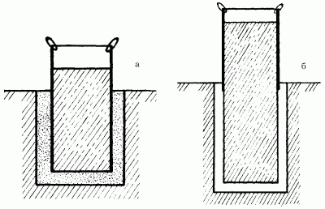
Рис. 43. Устройство столбчатого фундамента в трубе-опалубке: а – изготовление нижней части бетонного столба; б – изготовление верхней части фундаментного столба.
Затем выкладывают кирпичные стены между столбами фундамента, заглубляя их в землю на 25 см, выравнивают их цементным раствором и покрывают гидроизоляционным слоем. Снаружи устраивают глиняную отмостку.
Для экономии строительных материалов вместо кирпичных стен можно построить насыпные, используя для этого любые материалы, не поддающиеся гниению, например, гравий, обрезки шифера, строительный мусор, шлак, сухую землю и пр.
Насыпные стены возводят следующим образом. Прежде всего изготавливают деревянные рамы, охватывающие выступающими концами соседние столбы. Внутри каждой рамы укладывают два листа шифера, углубляя его в землю. Затем полое пространство между шифером заполняют насыпным, обязательно сухим материалом (рис. 44).
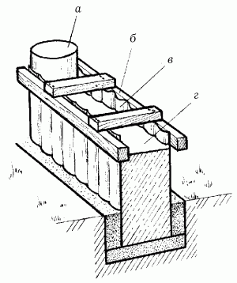
Рис. 44. Возведение насыпных стен при устройстве столбчатого фундамента: а – фундаментный столб; б – деревянная рама; в – шифер; г – минеральная засыпка.
Подобный способ применяют также и при возведении ленточных фундаментов. Для этого траншею под фундамент на половину ее глубины заполняют песком или гравием, хорошенько утрамбовывают и укладывают сверху кирпичи в 1 ряд. На кирпичи устанавливают обитые шифером рамы, а в пространство между листами шифера затем заливают бетонный раствор. Для изготовления рам применяют обработанный антисептиками и битумом материал.
В условиях плотного грунта, если стены траншеи под фундамент не обваливаются, целые листы шифера или обрезки устанавливают без рам, вдоль стен траншеи. Пространство снаружи засыпают песком и утрамбовывают, пространство между листами заполняют наполовину песком или гравием, тщательно утрамбовывая, потом заливают бетоном. После затвердения бетона листы шифера снимают и используют вторично. Вместо шифера применяют также дощатую разборную опалубку.